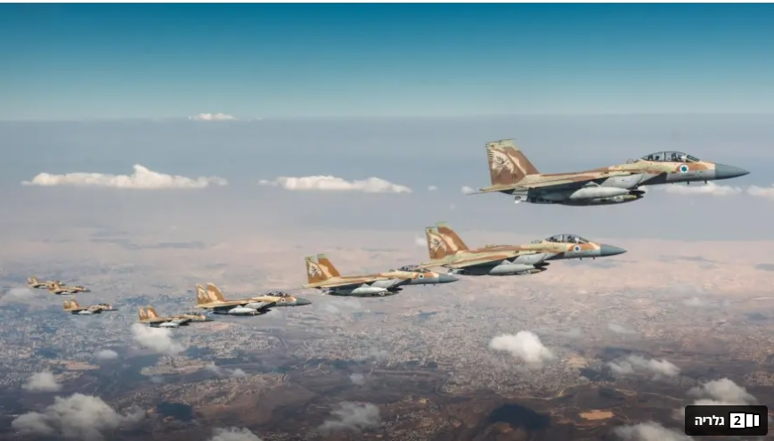

א
דנוטציה — מה אני רואה?
בסעיף זה תתרגלו לתאר תמונה בדיוק — רק מה שנמצא בה, בלי פרשנות.
📷 פעילות 1 — ניתוח דנוטטיבי מלא
לפניכם צילום. תארו אותו ניתוח דנוטטיבי: האובייקטים, זווית הצילום, צבעים, תאורה, קומפוזיציה. ללא פרשנות — רק תיאור.

🔍 פעילות 2 — זהו את אלמנטי הדנוטציה
לחצו על כל אלמנטי הצילום שניתן לנתח דנוטטיבית.
קומפוזיציהסידור האובייקטים
תאורהכיוון ועוצמה
צבעטונים ופלטה
זוויתנקודת מבט המצלמה
מיקודחד / מטושטש
מרחקקרוב / רחוק
ב
קונוטציה — מה אני מרגיש ומפרש?
💭 פעילות 3 — הקונוטציה הראשונה
חזרו לתמונה מפעילות 1. מה הרגשתם כשראיתם אותה בפעם הראשונה?
מה הייתה הקונוטציה הראשונה שלכם?
כיצד קשורות בחירות הצלם לקונוטציה הזו?
🆚 פעילות 4 — השוואת שתי תמונות
שתי תמונות של אותה אישה, באותו מקום — אחת צולמה אחרת. לחצו על התמונה שמעוררת קונוטציה חיובית יותר לדעתכם.
ג
המסקנה שלי
✍️ פעילות 5 — נתחו את התמונה הבאה
לפניכם תמונה תקשורתית. נתחו אותה בשתי הרמות — דנוטציה וקונוטציה.

📸 תמונה 3.jpgתמונה תופיע כאן בגרסה האמיתית